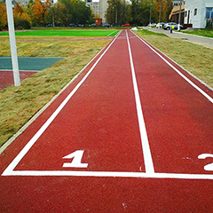

KRAFT FLOOR
Описание материалаПолиуретановое покрытие KRAFT Floor представляет собой двухкомпонентную полиуретановую композицию для устройства монолитных покрытий пола.
Не содержит органических растворителей и пластификаторов.
ПрименениеПредназначено для придания бетонным, асфальтобетонным, деревянным и металлическим полам хорошего внешнего вида и защиты полов от механических воздействий средней интенсивности (пешеходная нагрузка, транспорт на резиновом ходу и т.д.), воздействия влаги и химических веществ. В случае нанесения на металлические поверхности полиуретановые наливные покрытия являются надежной антикоррозионной защитой металла.
- Промышленные складские помещения.
- Офисные помещения.
- Промышленные холодильники.
- Гаражные комплексы, автосервисы, парковки, автомойки.
- Металлургическая и химическая промышленность.
- Фармацевтическая и электронная индустрии.
- Формирует прочное и гибкое покрытие, стойкое к ударным и вибрационным нагрузкам.
- Устойчиво к температурным перепадам, истиранию, воздействию воды, масло- и бензопродуктов.
- Обладает противоскользящими и антибактериальными свойствами.
- Не содержит растворителей, легколетучих и легковоспламеняющихся веществ.
- Не дает усадки при отверждении и в процессе эксплуатации.
- Привлекательный внешний вид покрытия.
- Перекрывает трещины в основании (с раскрытием до 0,7 мм).
- Цвет по согласованию с заказчиком (светло-серый, кирпичный, зеленый, синий, желтый, черный – наиболее распространенные).
| Технические характеристики | |
|---|---|
| Внешний вид | Покрытие гладкое, глянцевое |
| Плотность смеси компонентов (при +20°С) | 1,5±0,05 кг/л (по ГОСТ 28513) |
| Содержание нелетучих веществ, % | 100 |